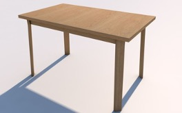
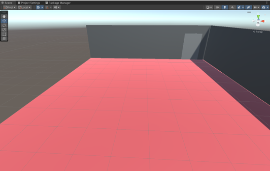
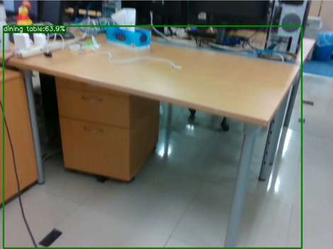
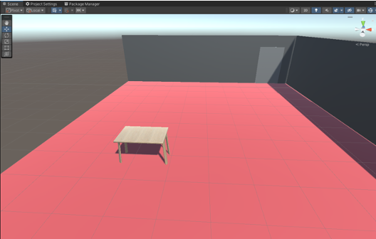
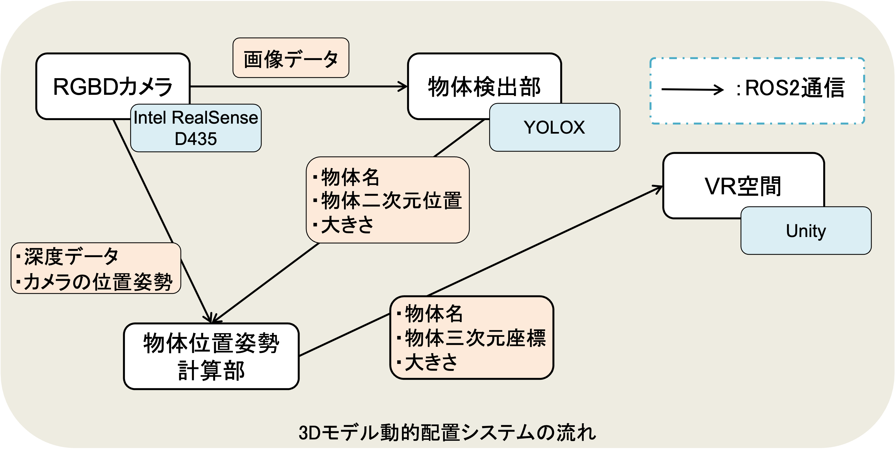
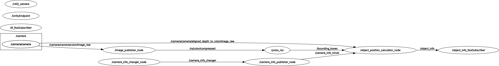

卒業研究
〜動的環境をVR空間に反映するシステム〜
研究期間: 2023年8月 ~ 現在に至る
開発環境: Unity, ROS2
開発言語: C#, Python
利用想定デバイス: Windows 10, Ubuntu 22.04
ステップ数:
- C#: 583行
- Python: 381行
詳細
はじめに
この研究は，リアルワールドメタバース（以降，RWMとする）というものの実現を目指して行われました．
従来のメタバースが基本的にVRで完結するのに対して，RWMは現実空間に焦点を当てたMRメタバースが基となっています．
ここで，MRとはVRの一種で，これはVRが完全に仮想空間上で情報が提示されるのに対して，MRではVRゴーグルなどを通して，現実に情報が追加して提示されるようなものを指します．身近なものとしては，ポケモンGOなどが挙げられ，近いものにはARなどの表現があります．
私が所属する研究室では，このRWMと従来のVRメタバースを組み合わせたMRキャンパスというものを提案しています．
このMRキャンパスでは，VRとMRの両方のユーザが存在し，それぞれが遠隔地からのユーザ，現地のユーザとなります．
つまり，完全にVRのメタバース空間，現実が基となるMRメタバースが同時に存在していることになります．
これを実現するためにはいくつかの課題があります．その例としては次のようになります．
- 両空間のメタバースにおけるユーザの位置姿勢や音声の互いの空間への反映
- 現実空間の環境をVR環境に同期すること

私はこの中でも，現実空間の環境をVR環境に同期するという課題を解決するために，”リアルワールドメタバースの実現に向けた動的環境をVR環境に反映するシステムの開発”と題した研究をしています．
この課題における問題点は，VR空間と現実空間を同期させる上で，現実空間を模したVR空間を生成する上で，事前に環境全てをモデリングで再現した際に，現実世界における机や椅子といった小物の移動によって，VR空間と現実空間との間で矛盾が発生してしまうことです．
ここで，リアルタイムに現実環境を三次元再構成してVR環境に反映することがまず思い浮かびますが，これはリアルタイムで通信量を大幅に消費するため，メタバースという大多数が同時に参加する条件下においてあまり好ましくありません．
これに対処するために提案したのが今回のシステムとなります．
提案システム
概要
今回提案したシステムの流れは次のとおりです．
-
必要なモデルの用意
まず，机や椅子といった，動く可能性のある物体を全てモデリングで用意します．
 -
VR環境の初期状態
そして，現実環境における半永続的に動かないような壁や床，天井のみをモデリングしたものを用意します．
 -
現実環境のセンシング
次に，現実環境をセンシングすることで，机や椅子といった動く可能性のある物体の位置や向きなどを取得します．
 -
VR環境への反映
最後に，センシングによって取得された物体の位置姿勢を基に，VR環境にモデルを動的に配置します．

この3,4の処理を繰り返すことによって現実環境とVR環境の同期を実現します．
実際のシステム構成
これらを実現するためのシステム構成が次のようになります．
これはシステムは次のような手順で処理が進みます．
-
環境のセンシング
まず，RGBDカメラ（通常のカメラに深度センサを加えたもの）で環境をセンシングし，環境の画像および深度画像を取得します．
ここでは，intel RealSense D435というRGBDカメラを使用しています． -
物体検出
次に，RGBDカメラから取得した画像より，VR環境に必要な移動する可能性のある机や椅子といった物体を検出し，画像内における位置や大きさを取得します．
ここでは，物体検出の手法として，YOLOXという二次元物体検出アルゴリズムを採用しています． -
物体の三次元位置の計算
そして，手順1,2からカメラの位置姿勢と深度画像，物体の二次元位置，大きさを取得して，三次元位置および三次元の大きさを計算します．
-
VR空間への反映
最後に，物体名や三次元位置，大きさを取得してVR空間にモデルを動的に配置します．
ここで，VR環境の構築には，Unityを使用しました．
ここで，YOLOXでは物体の向きが取れないといったことから，物体を配置する際に向きを考慮できないという課題があります．
そこで，今回のシステムでは，物体はカメラに対して正面を向いているとして配置し，複数角度からの物体検出に対して，正面から取得した時に最も理想的であると考えられる幅になる時の角度を正面として設定しています．
例えば，モニタの幅は正面から取得した際に最も幅が広くなり，真横から取得した際に最も小さくなると考えられるため，取得した中で最も幅の長い向きを正面として処理します．
動作確認
まず，動作確認環境を以下に示します．

カメラの位置姿勢を事前に決め，これらのカメラ1~3を順番に取得して反映することを考えます．
今回の動作確認における検出物体は3つのモニタであり，それぞれの位置姿勢を正しく反映できるかを確認します．
それでは，カメラ1~3からの結果を順番に取得した際の結果を以下に示します．
今回の動作確認では，机を白いキューブで表わし，モニタを黄色いキューブで表わしています．
この結果画像から，最初はカメラ1の方向に向いて反映されていますが，カメラ2, 3と取得方向が増えるにつれて，より正しい方向を向き，より理想的な幅に変わっているのがわかります．
実装詳細
Ubuntu側のセットアップ
Ubuntu側の処理では，主にROS2というデータの送受信に用いられる通信方法を用いています．
まず，以下の2つのgitから，intel RealSenseのデータをROS2通信に乗せて送るためのセットアップをします．
次に，以下の2つのgitから，YOLOXという物体検出を行うためのアルゴリズムをROS2通信に乗せて使うためのセットアップをします．
また，ROS2通信をWindows側のUnityと送受信可能にさせるためのセットアップをします．
Windows側のセットアップ
最後に，UnityでROS2通信を受信するためのセットアップをします．
利用方法
本システムの起動中のROS2通信のグラフを以下に示します．
このシステムでは，以下に示す順にROS2ノードを立ち上げることでIntelRealSense D435からのセンサ情報を基にVR環境（Unity）にモデルを反映します．
- realsense-rosのノードを立ち上げ，IntelRealSense D435のRGBDデータをROS2通信で送信する．
- realsense-rosが送信しているトピックを受け取って，yolox_rosが受け取るトピック名に変換して送信する
- yolox_rosのノードを立ち上げ，物体検出を行う．
- yolox_rosの物体検出結果と，realsense-rosの深度画像を基に物体の三次元位置と大きさを計算するノードを立ち上げ，物体の情報をまとめたデータを送信する．
- UnityEndPointのノードを立ち上げ，UnityとROS2通信の送受信を行うための架け橋を建てます．
- 最後に，Unity側のプロジェクトを実行し，物体情報のROS2通信を受信してVR空間にモデルを反映します．
以上で，今回開発したシステムを利用することができます．
また，今回作成したROS2およびUnityのプロジェクトのgitは本ページの最後に示しています．
今後の予定
以下の機能の追加や改善が予定されています:
- ロボットにカメラを乗せた自己位置推定機能の追加
- 対応できる検出物体の対象の増加